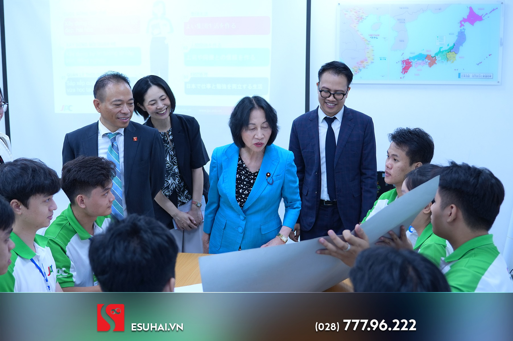
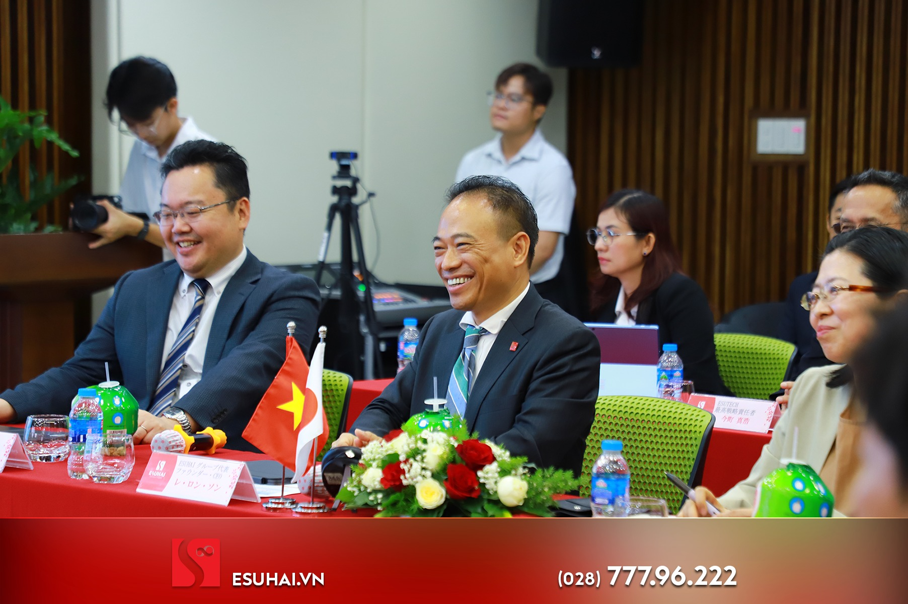

Trong những năm gần đây, mối quan hệ giữa Việt Nam và Nhật Bản tiếp tục phát triển tích cực trên nhiều lĩnh vực như kinh tế, giáo dục, lao động và chuyển giao công nghệ. Trong đó, đào tạo nguồn nhân lực chất lượng cao được xem là một trong những yếu tố quan trọng giúp tăng cường hợp tác Việt - Nhật theo hướng bền vững và lâu dài.
Sáng ngày 06/05/2026, ESUHAI Group đã đón tiếp Bà Matsushima Midori - Cố vấn đặc biệt (Phụ trách chính sách người nước ngoài) của Thủ tướng Sanae Takaichi - đến tham quan và làm việc tại TP.HCM. Tham gia đoàn còn có Ông Sugihara Kei - Bí thư thứ nhất Đại sứ quán Nhật Bản tại Việt Nam và Bà Tatara Shoko - Lãnh sự tại Tổng Lãnh sự quán Nhật Bản tại TP.HCM. Sự kiện thu hút sự quan tâm của nhiều học viên, người trẻ đang theo đuổi định hướng học tập và làm việc tại Nhật Bản.
Tại buổi làm việc, đại diện Esuhai đã giới thiệu về mô hình đào tạo tiếng Nhật, chương trình định hướng nghề nghiệp và các hoạt động hỗ trợ học viên trong quá trình học tập cũng như làm việc tại Nhật. Đoàn đại biểu cũng trực tiếp tham quan môi trường học tập và trải nghiệm phương pháp học tiếng Nhật “Chóp Chép” do Esuhai phát triển. Theo chia sẻ từ doanh nghiệp, việc chuẩn bị kỹ về ngoại ngữ, kỹ năng nghề và tác phong chuyên nghiệp sẽ giúp người lao động thích nghi tốt hơn với môi trường quốc tế.

Đoàn đại biểu tham quan môi trường học tập và giao lưu cùng học viên Esuhai.
Không chỉ dừng lại ở việc đào tạo tiếng Nhật, nhiều chương trình hiện nay còn tập trung phát triển kỹ năng mềm, văn hóa doanh nghiệp và khả năng giao tiếp trong môi trường đa quốc gia. Đây được xem là nền tảng cần thiết để người trẻ Việt Nam có thêm cơ hội cạnh tranh trong bối cảnh thị trường lao động ngày càng thay đổi.
Nắm bắt được nhu cầu nhân lực giữa hai quốc gia, Esuhai đã tổ chức nhiều hoạt động giao lưu văn hóa, hướng nghiệp và đào tạo nhằm tăng cường hợp tác Việt - Nhật trong lĩnh vực giáo dục và nguồn nhân lực. Doanh nghiệp thường xuyên triển khai các lớp học văn hóa Nhật Bản, chương trình giao lưu với giáo viên người Nhật và hoạt động trải nghiệm dành cho học viên trước khi sang Nhật học tập, làm việc. Bên cạnh việc đào tạo tiếng Nhật, các chương trình còn tập trung vào kỹ năng giao tiếp, tác phong làm việc và khả năng thích nghi với môi trường doanh nghiệp Nhật Bản.
Ngoài hoạt động đào tạo, Esuhai cũng tham gia nhiều hội thảo kết nối doanh nghiệp và xúc tiến hợp tác giữa Việt Nam và Nhật Bản. Một số chương trình nổi bật có thể kể đến như hội thảo kết nối doanh nghiệp tỉnh Ehime (Nhật Bản) với doanh nghiệp Việt Nam, các hoạt động hướng nghiệp cho học sinh THPT và hội thảo về phát triển nguồn nhân lực Việt Nam - Nhật Bản. Những hoạt động này góp phần mở rộng cơ hội việc làm, đồng thời thúc đẩy hợp tác giữa hai quốc gia theo hướng thực tiễn và bền vững hơn.

Buổi làm việc nhấn mạnh vai trò kết nối nguồn nhân lực giữa Việt Nam và Nhật Bản.
Đại diện đoàn Nhật Bản đánh giá cao vai trò của các doanh nghiệp đào tạo nhân lực tại Việt Nam trong việc thúc đẩy hợp tác Việt - Nhật thông qua giáo dục và việc làm. Theo đó, nhu cầu tuyển dụng lao động quốc tế tại Nhật Bản vẫn đang tăng ở nhiều ngành nghề như cơ khí, điều dưỡng, xây dựng, công nghệ và dịch vụ.
Nhiều chuyên gia nhận định rằng ngoài yếu tố chuyên môn, khả năng thích nghi văn hóa và tinh thần kỷ luật là những điều được doanh nghiệp Nhật Bản đặc biệt quan tâm. Vì vậy, các chương trình đào tạo theo tiêu chuẩn Nhật ngày càng chú trọng đến kỹ năng thực tế và thái độ làm việc của học viên.
Bên cạnh hoạt động đào tạo, Esuhai cũng giới thiệu hệ sinh thái công nghệ do Tổng Giám đốc Lê Long Sơn phát triển nhằm hỗ trợ học viên quản lý lộ trình học tập và nghề nghiệp trong tương lai. Theo doanh nghiệp, đây được xem là một trong những giải pháp giúp nâng cao tính minh bạch và khả năng kết nối giữa học viên với doanh nghiệp Nhật Bản trong giai đoạn mới.
Sự kiện Esuhai đón tiếp Cố vấn đặc biệt của Thủ tướng Nhật Bản không chỉ mang ý nghĩa ngoại giao mà còn cho thấy sự quan tâm của các bên đối với việc phát triển nguồn nhân lực trẻ Việt Nam. Đồng thời, sự kiện cũng phản ánh xu hướng mở rộng hợp tác Việt - Nhật trong bối cảnh quan hệ song phương ngày càng được nâng tầm.
Sự kiện lần này được xem là một dấu mốc tích cực trong hành trình kết nối giáo dục, việc làm và phát triển nguồn nhân lực giữa Esuhai Group nói riêng, Việt Nam nói chung và Nhật Bản. Qua đó cho thấy tiềm năng mở rộng hợp tác Việt - Nhật trong các lĩnh vực đào tạo, chuyển giao kỹ năng và phát triển nghề nghiệp cho thế hệ trẻ.
Bình luận
Mời bạn đọc chia sẻ góc nhìn về bài viết. Bình luận sẽ được kiểm duyệt trước khi hiển thị.